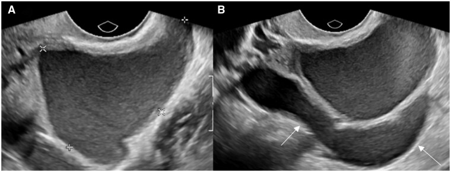

Ficha del catálogo
Endometrioma ovárico
- Sistema
- Reproductor
- Modalidad
- US
- Región
- Ovario y pelvis
- Dificultad
- Intermedio
El endometrioma es un quiste ovárico formado por la implantación de tejido endometrial ectópico que sangra de manera repetida y acumula productos de degradación de la sangre. Es la manifestación más visible de la endometriosis y se asocia a dismenorrea, dolor pélvico crónico, dispareunia e infertilidad. Con frecuencia coexiste con implantes profundos que deben buscarse de forma dirigida.
Técnica
El ultrasonido transvaginal es la técnica inicial y suele bastar para el diagnóstico. La resonancia se emplea para el mapa prequirúrgico de la endometriosis profunda y para lesiones dudosas, con secuencias potenciadas en T1 con y sin saturación grasa que confirman el contenido hemático. La exploración dinámica con presión del transductor valora la movilidad de los órganos y las adherencias.
Qué observar
- Quiste de contenido ecogénico homogéneo, en vidrio esmerilado, con refuerzo posterior
- Ausencia de flujo dentro del contenido con Doppler color
- Focos ecogénicos puntiformes adheridos a la pared
- Bilateralidad y contacto entre ambos ovarios en la línea media
- Movilidad reducida del ovario y adherencias al útero o a la pared pélvica
- Nódulos sólidos con vascularización interna, que obligan a descartar transformación
Hallazgos
Se identifica un quiste unilocular o con pocos tabiques cuyo contenido muestra ecos homogéneos de baja intensidad que le dan aspecto de vidrio esmerilado, sin flujo interno. Pueden verse focos ecogénicos parietales por depósitos de colesterol. En resonancia el contenido es hiperintenso en secuencias potenciadas en T1 y mantiene esa señal con saturación grasa, con marcada hipointensidad en T2 en las lesiones más antiguas.
Perlas
El rasgo de resonancia más útil es la combinación de señal alta en T1 con señal muy baja en T2, que traduce el contenido hemático concentrado. La aparición de un nódulo mural que realza dentro de un endometrioma conocido debe estudiarse siempre, porque la transformación maligna, aunque infrecuente, se manifiesta de esa forma.
Diagnóstico diferencial
- Quiste hemorrágico funcional
- Presenta trama reticular de fibrina y coágulo retráctil, y se resuelve en un control tras la menstruación.
- Teratoma maduro
- Contiene grasa y calcificaciones, pierde señal con saturación grasa y muestra sombra acústica.
- Absceso tuboovárico
- Cursa con fiebre y dolor agudo, con pared gruesa hipervascular y trompa dilatada adyacente.
- Cistoadenoma mucinoso
- Es multilocular con contenido de distinta ecogenicidad entre lóculos y suele ser de mayor tamaño.
Simuladores
- Asa intestinal con contenido denso adyacente al ovario
- Hidrosalpinge con pliegues que remeda tabiques
- Quiste dermoide con contenido finamente ecogénico
Por modalidad
- US
- Es la técnica de elección para el diagnóstico y el seguimiento, valora contenido, vascularización y movilidad.
- RM
- Confirma el contenido hemático, detecta lesiones múltiples y realiza el mapa de la endometriosis profunda.
Protocolo
Ultrasonido transvaginal con transductor de alta frecuencia, valorando ambos ovarios, el fondo de saco de Douglas, los ligamentos uterosacros y el tabique rectovaginal, con maniobras dinámicas para detectar adherencias. La resonancia pélvica incluye secuencias potenciadas en T2 en tres planos y en T1 con y sin saturación grasa, con relleno vaginal o rectal según el protocolo local. Conviene documentar el tamaño de cada lesión para el seguimiento.
Clasificación
Errores frecuentes
- Confundir un quiste hemorrágico reciente con un endometrioma y no repetir el control
- Limitar el estudio a los ovarios sin buscar implantes profundos ni adherencias
- Ignorar un nódulo mural vascularizado dentro de un endometrioma conocido

endometrioma endometriosis vidrio esmerilado ovario dolor pélvico resonancia pélvica adherencias